3. 附录
3.1. 在 Windows XP Home Edition 上使用 Visual Studio.NET 构建 Web 项目
Visual Studio.NET 允许您构建不同类型的项目：

要构建 Web 应用程序项目，通常应选择 [ASP.NET Web 应用程序] 类型。此类项目需要本地或远程的 IIS Web 服务器。如果您正在 Windows XP 计算机上工作，该服务器并不存在且无法安装。因此，您无法创建 [ASP.NET Web 应用程序] 项目。
您可以通过接受一些微小的缺点来解决此问题。只需：
- 使用 Cassini Web 服务器代替 IIS 服务器。您可以在 Microsoft 网站上免费获取该软件。
- 使用 [类库] 项目代替 [ASP.NET Web 应用程序] 项目
让我们创建一个简单的项目来演示具体操作方法。
- 创建一个 [类库] 项目
 |  |
- 删除 [Class1.vb]

- 向项目中添加一个新项，类型为 [文本文件]，并将其命名为 [demo.aspx]：
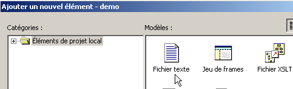 |  |
- 系统将 [demo.aspx] 文件识别为网页，并为其关联了一个页面编辑器。该编辑器包含两个面板：
- [设计] 用于图形化构建页面
- [HTML] 用于访问页面的 HTML 代码

- 选择 [视图/代码] 以显示页面的 VB 代码部分。没有任何反应。您无法访问页面的 VB 代码。
- 转到 [HTML] 窗格，并输入将 [demo.aspx] 页面与 [demo.aspx.vb] 代码关联的代码：

- 通过 [查看代码 - F7] 请求查看与该页面关联的控件代码。您将看到 [demo.aspx.vb] 文件：

- 现在，[demo.aspx] 页面已被识别为一个带有相关联 [.aspx.vb] 文件的 [.aspx] 网页。
- 返回 [demo.aspx] 的 [设计] 窗格，并设计以下页面：

该页面包含文本以及一个标识符为 [lblHeure] 的 [Label] 类型服务器组件。
- 切换到 [HTML] 窗格。您将在那里找到以下代码：
<%@ Page codebehind="demo.aspx.vb" inherits="demo.demo" autoeventwireup="false" Language="vb" %>
Démo ASPX, il est
<asp:Label id="lblHeure" runat="server"></asp:Label>
从 HTML 语法角度来看，这段代码是不完整的。让我们将其补全：
<%@ Page codebehind="demo.aspx.vb" inherits="demo.demo" autoeventwireup="false" Language="vb" %>
<html>
<head>
<title>démo ASPX</title></head>
<body>
Démo ASPX, il est
<asp:Label id="lblHeure" runat="server"></asp:Label>
</body>
</html>
- 现在我们打开 [demo.aspx.vb] 文件，编写用于设置 [lblHeure] 控件时间的代码。我们会发现，代码补全工具 IntelliSense 无法识别此代码。
- 保存 [demo.aspx] 和 [demo.aspx.vb] 后将其关闭，然后重新打开。转到 [demo.aspx.vb] 中的代码。这次，[demo.aspx] 中的 [lblHeure] 组件在 [demo.aspx.vb] 代码中被 IntelliSense 识别到了。完成代码：

- 通过选择 [Build/Build demo] 来构建项目。如果构建成功，DLL 文件将生成在项目的 [bin] 文件夹中：

- 现在我们可以进行测试了。我们将按以下方式配置 Cassini 服务器（参见下一段）：

Cassini 快捷方式的目标设置如下：
"E:\Program Files\Microsoft ASP.NET Web Matrix\v0.6.812\WebServer.exe" /path:"D:\temp\07-04-05\demo" /vpath:"/demo"
可执行文件的路径 | |
Visual Studio Web 项目文件夹的路径 | |
关联的虚拟路径 |
- 启动 Cassini。其图标将出现在任务栏中。右键单击该图标并选择 [显示详细信息] 选项，以验证 Web 服务器是否配置正确：

- 使用浏览器，通过输入 URL [http://localhost/demo/demo.aspx] 访问我们构建的页面。我们将得到以下结果：

我们已成功在 Visual Studio 中使用以下方式创建了一个 Web 应用程序：
- 一个 [类库] 项目
- Cassini Web 服务器
现在我们已经知道如何在未安装 IIS 服务器的计算机上构建 Web 应用程序，例如 Windows XP 家庭版计算机。
3.2. 在哪里可以找到 Cassini Web 服务器？
若要使用 Microsoft 的 .NET 平台，您可以使用 Cassini Web 服务器。该服务器可通过名为 [WebMatrix] 的产品获取，这是一款面向 .NET 平台的免费 Web 开发环境，可通过以下网址获取：

请仔细按照产品安装步骤操作：
- 下载并安装 .NET 平台（截至 2004 年 3 月为 1.1 版）
- 下载并安装 WebMatrix
- 下载并安装 MSDE（Microsoft Data Engine），这是 SQL Server 的精简版。
安装完成后，[WebMatrix] 产品将出现在已安装的程序中：

点击 [ASP.NET] Web Matrix 链接即可启动 ASP.NET 开发集成开发环境 (IDE)：
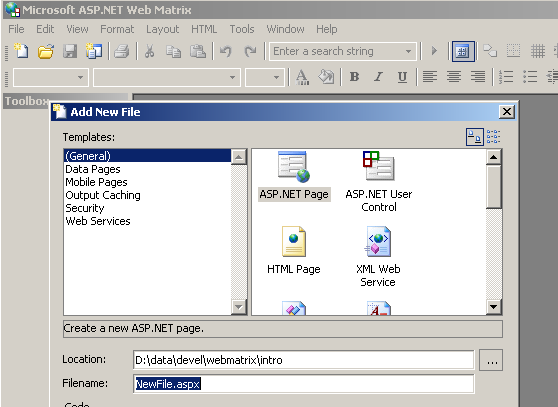
[类浏览器] 链接将启动一个用于浏览 .NET 类的工具：

为了测试安装是否成功，让我们启动 [WebMatrix]：
 |
首次启动时，[WebMatrix] 会提示您输入新项目的规格。这是其默认配置。您可以进行设置，使其在启动时不再显示此对话框。之后，您可以通过 [文件/新建文件] 选项访问它。 [WebMatrix] 允许您为各种 Web 应用程序创建模板。在上图中，我们在 (1) 处指定要创建一个 [ASP.NET 页面] 应用程序，即一个 Web 页面。在 (2) 处，我们指定该 Web 页面的存放文件夹。在 (3) 处，我们输入页面的名称。该名称必须带有 .aspx 扩展名。 最后，在 (4) 中，我们指定使用 VB.NET 语言进行开发；[WebMatrix] 还支持 C# 和 J# 语言。完成上述操作后，[WebMatrix] 将显示 [demo1.aspx] 文件的编辑页面。我们在其中输入以下代码：
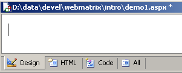
- 在 [设计] 选项卡中，您可以“设计”要构建的网页。其工作原理与 Windows 应用程序开发 IDE 类似。
- 在 [设计] 选项卡中对网页进行的图形化设计将在 [HTML] 选项卡中生成 HTML 代码
- 网页中可能包含会触发需要响应的事件的控件，例如按钮。这些事件将由放置在 [代码] 选项卡中的 VB.NET 代码进行处理
- 最终，demo1.aspx 文件是一个结合了 HTML 代码和 VB.NET 代码的文本文件，它由 [设计] 选项卡中创建的图形化设计、[HTML] 选项卡中手动添加的 HTML 代码以及 [代码] 选项卡中放置的 VB.NET 代码共同生成。整个文件可在 [全部] 选项卡中查看。
- 经验丰富的 ASP.NET 开发人员无需借助任何集成开发环境 (IDE)，即可直接使用文本编辑器构建 demo1.aspx 文件。
让我们选择 [All] 选项。我们可以看到 [WebMatrix] 已经生成了一些代码：
<%@ Page Language="VB" %>
<script runat="server">
' Insert page code here
'
</script>
<html>
<head>
</head>
<body>
<form runat="server">
<!-- Insert content here -->
</form>
</body>
</html>
我们在此不打算解释这段代码。我们将按以下方式对其进行转换：
<html>
<head>
<title>Démo asp.net </title>
</head>
<body>
Il est <% =Date.Now.ToString("hh:mm:ss") %>
</body>
</html>
上面的代码是 HTML 和 VB.NET 代码的混合。它被放置在 <% ... %> 标签内。要运行此代码，我们使用 [视图/开始] 选项。如果 Cassini Web 服务器尚未运行，[WebMatrix] 将会启动它

您可以接受此对话框中提供的默认值，并选择 [启动] 选项。此时 Web 服务器即已启动。[WebMatrix] 随后将在其运行的计算机上启动默认浏览器，并请求 URL http://localhost:8080/demo1.aspx：
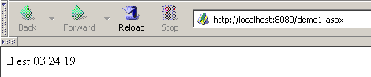
您也可以在 [WebMatrix] 外部使用 Cassini 服务器。服务器可执行文件位于 <WebMatrix>\<version>\WebServer.exe，其中 <WebMatrix> 是 [WebMatrix] 的安装目录，<version> 是其版本号：

打开命令提示符窗口，并导航至 Cassini 服务器文件夹：
E:\Program Files\Microsoft ASP.NET Web Matrix\v0.6.812>dir
...
29/05/2003 11:00 53 248 WebServer.exe
...
让我们不带任何参数运行 [WebServer.exe]：
此时会弹出一个帮助窗口：

[WebServer] 应用程序（也称为 Cassini Web 服务器）接受三个参数：
- /port：Web 服务的端口号。可以是任意数字。默认值为 80
- /port：磁盘上文件夹的物理路径
- /vpath：与前述物理文件夹关联的虚拟文件夹。请注意，其语法并非 /path=path，而是 /vpath:path，这与上方帮助面板中的 [示例] 所述内容相反。
让我们将文件 [demo1.aspx] 放置在以下文件夹中：

我们将虚拟文件夹 [/webmatrix] 与物理文件夹 [d:\data\devel\webmatrix] 关联起来。Web 服务器可通过以下方式启动：
E:\Program Files\Microsoft ASP.NET Web Matrix\v0.6.812>webserver /port:100 /path:"d:\data\devel\webmatrix" /vpath:"/webmatrix"
Cassini 服务器现已启动，其图标会出现在任务栏中。若双击该图标：

您将看到服务器的启动设置。您还可以选择停止 [停止] 或重启 [重启] Web 服务器。如果点击 [根 URL] 链接，服务器的 Web 目录树根目录将在浏览器中打开：

请点击 [demos] 链接：

然后点击 [demo1.aspx] 链接：

我们可以看到，如果物理文件夹 P=[d:\data\devel\webmatrix] 已映射到虚拟文件夹 V=[/webmatrix]，且服务器运行在 100 端口上， 那么物理位置位于 [P\demos] 目录下的网页 [demo1.aspx]，即可通过 URL [http://localhost:100/V/demos/demo1.aspx] 在本地访问。
为避免必须通过 DOS 窗口启动 Cassini 服务器，您可以创建一个指向服务器可执行文件的快捷方式，其属性设置如下所示：

"C:\Program Files\Microsoft ASP.NET Web Matrix\v0.6.812\WebServer.exe" /port:80 /path:"D:\data\serge\work\2004-2005\aspnet\webarticles-010405\version3\web" /vpath:"/webarticles" | |
"C:\Program Files\Microsoft ASP.NET Web Matrix\v0.6.812" |
3.3. 在哪里可以找到 Spring？
Spring 的官方网站是 [http://www.springframework.org/]。这是 Java 版本的网站。目前正在开发中的 .NET 版本（2005 年 4 月）可在 [http://www.springframework.net/] 获取。

下载站点位于 [SourceForge]：

下载上述 zip 文件后，请将其解压：

在本文档中，我们仅使用了 [bin] 文件夹中的内容：

在使用 Spring 的 Visual Studio 项目中，您必须始终执行以下两项操作：
- 将上述文件放置在项目的 [bin] 文件夹中
- 向项目添加对 [Spring.Core.dll] 程序集的引用
3.4. 在哪里可以找到 NUnit？
NUnit 的官方网站是 [http://www.nunit.org/]。2005 年 4 月可用的版本是 2.2.0：

下载此版本并进行安装。安装过程会生成一个包含图形化测试界面的文件夹：
有趣的部分在 [bin] 文件夹中：

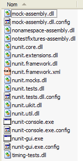
上方的箭头指向图形化测试工具。安装过程还向 Visual Studio 程序集存储库添加了新项目，我们现在将对此进行探索。
让我们创建以下 Visual Studio 项目：

待测试的类位于 [Person.vb] 中：
Public Class Personne
' private fields
Private _nom As String
Private _age As Integer
' default builder
Public Sub New()
End Sub
' properties associated with private fields
Public Property nom() As String
Get
Return _nom
End Get
Set(ByVal Value As String)
_nom = Value
End Set
End Property
Public Property age() As Integer
Get
Return _age
End Get
Set(ByVal Value As Integer)
_age = Value
End Set
End Property
' identity chain
Public Overrides Function tostring() As String
Return String.Format("[{0},{1}]", nom, age)
End Function
' init method
Public Sub init()
Console.WriteLine("init personne {0}", Me.ToString)
End Sub
' close method
Public Sub close()
Console.WriteLine("destroy personne {0}", Me.ToString)
End Sub
End Class
测试类位于 [NunitTestPersonne-1.vb] 中：
Imports System
Imports NUnit.Framework
<TestFixture()> _
Public Class NunitTestPersonne
' object tested
Private personne1 As Personne
<SetUp()> _
Public Sub init()
' create an instance of Person
personne1 = New Personne
' log
Console.WriteLine("setup test")
End Sub
<Test()> _
Public Sub demo()
' log screen
Console.WriteLine("début test")
' init person1
With personne1
.nom = "paul"
.age = 10
End With
' tests
Assert.AreEqual("paul", personne1.nom)
Assert.AreEqual(10, personne1.age)
' log screen
Console.WriteLine("fin test")
End Sub
<TearDown()> _
Public Sub destroy()
' follow-up
Console.WriteLine("teardown test")
End Sub
End Class
几点注意事项：
- 方法被赋予了诸如 <Setup()>、<TearDown()> 等属性
- 要使这些属性被识别，必须满足以下条件：
- 项目引用了程序集 [nunit.framework.dll]
- 测试类导入了命名空间 [NUnit.Framework]
通过在“解决方案资源管理器”中右键单击 [引用] 来添加该引用：
 |  |

如果 [NUnit] 安装成功，列表中应包含 [nunit.framework.dll] 程序集。只需双击该程序集即可将其添加到项目中：

完成此操作后，测试类 [NunitTestPersonne] 必须导入 [NUnit.Framework] 命名空间：
随后，测试类 [NunitTestPersonne] 的属性将被识别。
- <Test()> 属性用于指定待测试的方法
- <Setup()> 属性指定在每个待测方法之前执行的方法
- <TearDown()> 属性指定在每个被测方法之后执行的方法
- Assert.AreEqual 方法允许您测试两个实体的相等性。还有许多其他 Assert.xx 类型的方法。
- 一旦 [Assert] 方法失败，NUnit 工具会立即停止被测方法的执行并显示错误信息。否则，它会显示成功信息。
让我们配置项目以生成 DLL：

生成的 DLL 将命名为 [nunit-demos-1.dll]，并默认放置在项目的 [bin] 文件夹中。现在来构建我们的项目。在 [bin] 文件夹中，我们会看到以下内容：

现在，让我们启动 NUnit 图形化测试工具。请记住，该工具位于 <Nunit>\bin 目录下，文件名为 [nunit-gui.exe]。<Nunit> 指的是 [Nunit] 的安装目录。此时将显示以下界面：

现在，让我们使用 [文件/打开] 菜单选项，从项目中加载 [nunit-demos-1.dll] DLL：

[Nunit] 可以自动检测加载的 DLL 中包含的测试类。在此，它找到了 [NunitTestPersonne] 类。随后，它会显示该类中所有带有 <Test()> 属性的方法。[运行] 按钮允许您对所选对象运行测试。如果这是 [NunitTestPersonne] 类，则所有显示的方法都会被测试。 您可以通过选中特定方法并点击 [Run] 来测试该方法。让我们运行该类：

左侧窗口中，方法旁边的绿色圆点表示该方法的测试成功，红色圆点表示测试失败。
右侧的 [Console.Out] 窗口显示被测试方法生成的屏幕输出。在此，我们希望跟踪测试的进度：
- 第 1 行表明 <Setup()> 属性方法在测试开始前被执行
- 第 2–3 行是由正在被测试的 [demo] 方法生成的（参见上文代码）
- 第 4 行表明 <TearDown()> 属性方法在测试结束后执行
3.5. 在哪里可以找到 Firebird 数据库管理系统？
Firebird 的官方网站是 [http://firebird.sourceforge.net/]。下载页面提供了以下链接（2005年4月）：

您将下载以下内容：
适用于 Windows 的数据库管理系统 | |
一个用于 .NET 应用程序的类库，允许在不使用 ODBC 驱动程序的情况下访问该数据库管理系统。 | |
Firebird ODBC 驱动程序 |
请安装这些组件。数据库管理系统（DBMS）安装在内容类似于以下所示的文件夹中：

二进制文件位于 [bin] 文件夹中：

允许您启动/停止数据库管理系统 | |
用于管理数据库的命令行客户端 |
请注意，默认情况下，数据库管理系统管理员的用户名为 [SYSDBA]，密码为 [masterkey]。[开始] 菜单中已添加相关选项：

通过 [Firebird Guardian] 选项，您可以启动/停止 DBMS。启动后，DBMS 图标将保留在 Windows 任务栏中：
 |
若要使用命令行客户端 [isql.exe] 创建和管理 Firebird 数据库，您必须阅读产品 [doc] 文件夹中随附的文档。使用图形化客户端是操作 Firebird 的更快捷方式。其中一种客户端是 IB-Expert，下文将对此进行介绍。
3.6. 在哪里可以找到 IB- Expert？
Firebird 的官方网站是 [http://www.ibexpert.com/]。其下载页面提供了以下链接：

请选择免费版本 [Personal Edition]。下载并安装完成后，您将获得一个类似于下图所示的文件夹：

可执行文件为 [ibexpert.exe]。通常在 [开始] 菜单中会有一个快捷方式：

启动后，IBExpert将显示以下窗口：

使用 [数据库/创建数据库] 选项来创建数据库：

可以是 [本地] 或 [远程]。在此，我们的服务器与 [IBExpert] 位于同一台机器上。因此我们选择 [本地] | |
使用下拉菜单中的 [文件夹] 按钮选择数据库文件。Firebird 将整个数据库存储在一个文件中。这是它的优势之一。您只需复制该文件，即可将数据库从一台计算机转移到另一台。系统会自动添加 [.gdb] 后缀。 | |
SYSDBA 是当前 Firebird 发行版的默认管理员 | |
masterkey 是当前 Firebird 发行版中 SYSDBA 管理员的密码 | |
要使用的 SQL 方言 | |
如果勾选此框，IBExpert 将在数据库创建后显示一个链接 |
如果在点击 [确定] 按钮创建数据库时，您看到以下警告：

这意味着您尚未启动 Firebird。请启动它。随后将出现一个新窗口：

[IBExpert] 可以管理各种源自 Interbase 的数据库管理系统。请选择您已安装的 Firebird 版本 |

点击 [注册] 确认此新窗口后，您将看到以下结果：

要访问已创建的数据库，只需双击其链接。随后 IBExpert 将显示一个树形视图，供您访问数据库属性：

现在我们来创建一个表。右键单击 [表]，然后选择 [新建表] 选项。此时将显示表属性定义窗口：
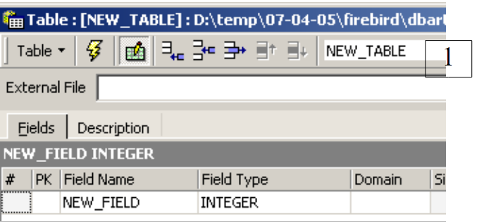 |
首先，在输入字段 [1] 中将表命名为 [ARTICLES]：
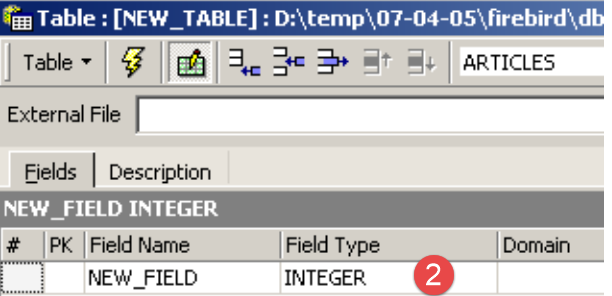 |
使用输入字段 [2] 定义主键 [ID]：
 |
双击 [PK]（主键）字段即可将其设为主键。现在我们使用 [3] 按钮添加字段：

在“编译”完定义之前，表不会被创建。请使用上方的 [编译] 按钮来完成表的定义。IBExpert 会准备用于生成该表的 SQL 查询，并请求您确认：

值得注意的是，IBExpert 会显示已执行的 SQL 查询。这使您既能学习 SQL 语言，也能了解可能使用的任何专有 SQL 方言。[提交] 按钮用于确认当前事务，而 [回滚] 则用于取消事务。在此，我们点击 [提交] 接受该操作。完成后，IBExpert 会将创建的表添加到我们的数据库树中：

双击该表，即可访问其属性：

[约束]面板允许我们为该表添加新的完整性约束。让我们打开它：
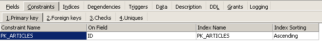
我们可以看到之前创建的主键约束。现在可以添加其他约束：
- 外键 [Foreign Keys]
- 字段完整性约束 [检查]
- 字段唯一性约束 [Uniques]
请注意：
- 字段 [ID, PRICE, CURRENTSTOCK, MINIMUMSTOCK] 必须大于 0
- [NAME] 字段必须不为空且唯一
打开 [检查] 面板，在约束定义区域中右键单击以添加新约束：
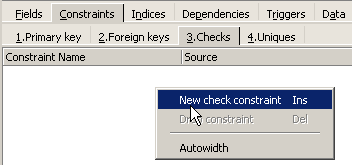
让我们定义所需的约束条件：
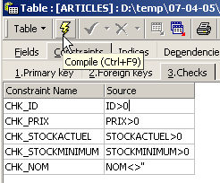
请注意，上述约束 [NAME<>''] 使用的是两个单引号，而不是双引号。使用上方的 [编译] 按钮编译这些约束：

IBExpert 再次展现了其用户友好性，显示了已执行的 SQL 查询。现在，让我们转到 [Constraints/Unique] 面板，指定名称必须是唯一的：

让我们定义该约束：

现在进行编译。完成后，打开 [ARTICLES] 表的 [DDL] 面板：

该面板会显示用于生成包含所有约束条件的表的 SQL 代码。您可以将此代码保存到脚本中以便日后运行：
SET SQL DIALECT 3;
SET NAMES NONE;
CREATE TABLE ARTICLES (
ID INTEGER NOT NULL,
NOM VARCHAR(20) NOT NULL,
PRIX DOUBLE PRECISION NOT NULL,
STOCKACTUEL INTEGER NOT NULL,
STOCKMINIMUM INTEGER NOT NULL
);
ALTER TABLE ARTICLES ADD CONSTRAINT CHK_ID check (ID>0);
ALTER TABLE ARTICLES ADD CONSTRAINT CHK_PRIX check (PRIX>0);
ALTER TABLE ARTICLES ADD CONSTRAINT CHK_STOCKACTUEL check (STOCKACTUEL>0);
ALTER TABLE ARTICLES ADD CONSTRAINT CHK_STOCKMINIMUM check (STOCKMINIMUM>0);
ALTER TABLE ARTICLES ADD CONSTRAINT CHK_NOM check (NOM<>'');
ALTER TABLE ARTICLES ADD CONSTRAINT UNQ_NOM UNIQUE (NOM);
ALTER TABLE ARTICLES ADD CONSTRAINT PK_ARTICLES PRIMARY KEY (ID);
现在是向 [ARTICLES] 表中输入数据的时候了。为此，请使用其 [Data] 面板：

通过双击表格中每行对应的输入字段即可输入数据。点击 [+] 按钮可添加新行，点击 [-] 按钮可删除行。这些操作均在事务范围内进行，需通过 [提交事务] 按钮提交事务。若未提交，数据将丢失。
IBExpert 允许您通过 [Tools/SQL Editor] 选项或 [F12] 键运行 SQL 查询。这将打开一个高级 SQL 查询编辑器，供您执行查询。查询会被保存，因此您可以重新访问已执行过的查询。以下是一个示例：
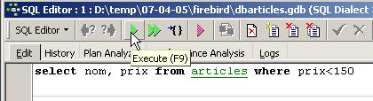
我们通过上方的 [执行] 按钮执行该 SQL 查询。结果如下：

我们的演示到此结束。IBExpert 与 Firebird 的组合被证明是学习数据库的绝佳选择。
3.7. 安装并使用 [Firebird] 的 ODBC 驱动程序
3.8. 安装驱动程序
[Firebird] 下载页面（第 3.5 节）上的 [firebird-odbc-provider] 链接提供了 ODBC 驱动程序的下载入口。安装完成后，该驱动程序将显示在已安装的 ODBC 驱动程序列表中。
3.9. 创建 ODBC 数据源
- 启动工具 [开始 -> 设置 -> 配置工具 -> 管理工具 -> ODBC 数据源]：

- 随后将显示以下窗口：
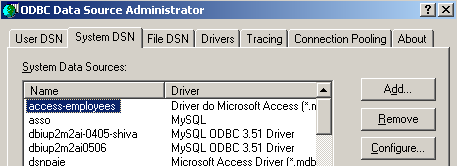
- 点击 [添加] 以添加一个新的系统数据源（位于 [系统 DSN] 窗格中），我们将将其与上一节中创建的 Firebird 数据库关联：
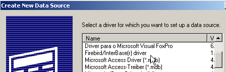
- 首先，我们需要指定要使用的 ODBC 驱动程序。如上所示，我们选择 Firebird 的驱动程序，然后点击 [完成]。随后 Firebird ODBC 驱动程序向导将接管后续操作：

- 我们填写各个字段：

ODBC 源的 DSN 名称——可以是任意名称 | |
要使用的 Firebird 数据库名称——使用 [浏览] 选择相应的 .gbd 文件 | |
用于连接数据库的用户名 | |
与该用户名关联的密码 |
[测试连接] 按钮可让您验证所输入信息的有效性。使用该按钮前，请先启动 [Firebird] 数据库管理系统：

- 根据需要多次点击 [确定] 以确认 ODBC 向导
3.10. 测试 ODBC 数据源
有多种方法可以验证 ODBC 数据源是否正常工作。在此，我们将使用 Excel：
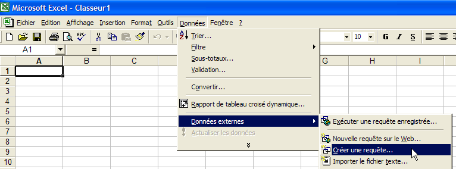
- 使用上方的 [数据 -> 外部数据 -> 创建查询] 选项。这将打开数据源定义向导的第一个窗口。[数据库] 窗格中列出了当前计算机上已定义的 ODBC 数据源：

- 选择我们刚刚创建的 ODBC 数据源 [odbc-firebird-articles]，然后单击 [确定] 进入下一步：

- 此窗口列出了 ODBC 数据源中可用的表和列。我们将选择整个表：
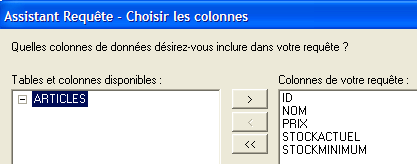
- 点击 [下一步] 进入下一步：

- 此步骤允许我们对数据进行筛选。在此，我们不进行任何筛选，直接进入下一步：

- 此步骤允许我们对数据进行排序。我们不会进行排序，而是直接进入下一步：

- 最后一步询问我们希望对数据进行什么操作。这里，我们将数据导出到 Excel：

- 此时，Excel 会询问我们希望将检索到的数据放置在何处。我们将数据放置在当前工作表的 A1 单元格开始的位置。随后，数据便会导入到 Excel 工作表中：

还有其他方法可以测试 ODBC 数据源的有效性。例如，您可以使用 [http://www.openoffice.org] 提供的免费 OpenOffice 套件。以下是一个使用 OpenOffice 的示例：
 |  |
- OpenOffice 窗口左侧的图标可用于访问数据源。随后界面将切换为显示数据源管理区域：
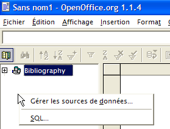
- 系统预设了一个数据源：[参考文献]。右键单击数据源区域，可通过[管理数据源]选项创建新的数据源：

- [数据源管理]向导可用于创建数据源。右键单击数据源区域，可通过[新建数据源]选项创建新的数据源：

任意名称。此处我们使用了 ODBC 数据源的名称 | |
OpenOffice 通过 JDBC、ODBC 或直接连接（如 MySQL、Dbase 等）支持多种数据库类型。在本示例中，请选择 ODBC | |
输入字段右侧的按钮可让我们访问该机器上的 ODBC 数据源列表。我们选择数据源 [odbc-firebird-articles] |
- 转到 [ODBC] 面板，定义将用于建立连接的用户凭据：

ODBC 数据源的所有者 |
- 转到 [表] 面板。系统会提示您输入密码。此处的密码是 [masterkey]：
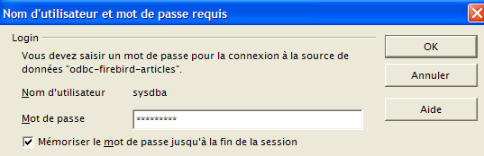
- 点击 [确定]。随后将显示 ODBC 数据源中的表列表：

- 您可以选择要在 [OpenOffice] 文档中显示的表。此处，我们选择 [ARTICLES] 表并点击 [确定]。数据源定义已完成。随后它将出现在当前文档的数据源列表中：

- 您可以使用鼠标将上方的 [ARTICLES] 表拖拽到 [OpenOffice] 文档中：

3.11. Firebird ODBC 数据源的连接字符串
- 启动 Visual Studio 并打开服务器资源管理器 [视图/服务器资源管理器]：
 |
- 右键单击 [数据连接]，然后选择 [添加连接] 选项：

- 在 [提供程序] 面板中，指定要使用 ODBC 数据源（参见上文），然后切换到 [连接] 面板：

从下拉菜单中选择 ODBC 数据源。您刚刚创建的数据源应会显示出来。如有必要，请使用 [刷新] 按钮刷新 ODBC 数据源列表。 | |
用于连接数据库的用户名 | |
与该用户名关联的密码 |
这里同样有一个 [测试连接] 按钮，可用于验证信息的有效性：

- 单击 [确定] 确认向导。随后，该数据源将显示在 Visual Studio 的 [服务器资源管理器] 窗口中：

- 双击 [ARTICLES] 表，即可访问该表的数据：

- 如果右键单击 [Firebird Server D:\temp\... ] 链接并选择 [属性] 选项，即可查看连接属性：

- [ConnectString] 是一个需要了解的重要属性，因为 .NET 代码需要它来建立与数据库的连接。此处的连接字符串为：
Provider=MSDASQL.1;Persist Security Info=False;User ID=SYSDBA;Data Source=demo-odbc-firebird;Extended Properties="DSN=demo-odbc-firebird;Driver=Firebird/InterBase(r) driver;Dbname=D:\temp\07-04-05\firebird\DBARTICLES.GDB;CHARSET=NONE;UID=SYSDBA"
此连接字符串中的许多元素都有默认值。以下连接字符串即可满足需求：
至此，我们对 [Firebird] ODBC 驱动程序的概述已全部结束。
3.12. 在哪里可以找到 MSDE ？
MSDE 是微软 SQL Server 数据库管理系统的免费版本。您可以在以下网址找到它：[http://www.microsoft.com/sql/msde/downloads/download.asp]：
 |
 | 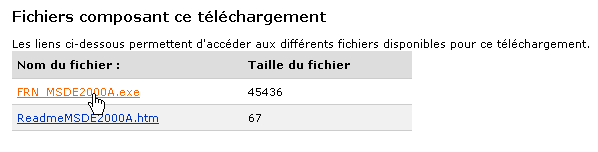 |
下载安装文件，然后双击下载的可执行文件安装数据库管理系统。随后会弹出一个窗口，要求指定安装文件夹。该窗口的标题容易引起误解。这是一个临时文件夹，稍后可以删除：
 | 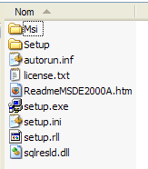 |
请仔细阅读 [ReadmeMSDE2000A.htm] 文件。上述的安装程序是 [setup.exe]。它通过命令行运行，因此您可以向其传递参数。主要参数如下：
说明 | |
| 指定要分配给管理员登录名“sa”的强密码。 |
| 定义实例名称。如果未指定 INSTANCENAME，安装程序将安装一个默认实例。 |
其他常用于自定义安装的参数包括：
描述 | |
指定实例是否接受来自其他计算机上运行的应用程序的网络连接。默认情况下，或者如果您指定 DISABLENETWORKPROTOCOLS=1，安装程序会将实例配置为拒绝网络连接。指定 DISABLENETWORKPROTOCOLS=0 以启用网络连接。 | |
指定实例应以混合模式安装，这意味着该实例同时支持 Windows 身份验证和 SQL 身份验证进行连接 | |
| 指定安装程序用于安装系统数据库、错误日志和安装脚本的文件夹。data_folder_path 的指定值必须以反斜杠 (\) 结尾。对于默认实例，安装程序会在指定值后附加 MSSQL\。 对于命名实例，安装程序会在指定值后附加 MSSQL$InstanceName\，其中 InstanceName 是通过 INSTANCENAME 参数指定的值。安装程序会在指定位置创建三个文件夹：Data 文件夹、Log 文件夹和 Script 文件夹。 |
| 指定安装程序安装 MSDE 2000 可执行文件的文件夹。executable_folder_path 的指定值必须以反斜杠 (\) 结尾。对于默认实例，安装程序会在指定值后附加 MSSQL\Binn。 对于命名实例，安装程序会在指定值后附加 MSSQL$InstanceName\Binn，其中 InstanceName 是通过 INSTANCENAME 参数指定的值。 |
阅读上述安装建议后，请导航至安装文件解压后的文件夹，并输入以下 DOS 命令（在无网络环境下使用 DBMS）：
- INSTANCENAME="MSDE140405" - 这是我们的 MSDE 实例名称。您可以安装多个实例。
- SECURITYMODE=SQL - 数据库管理系统将以混合身份验证模式运行。这允许您通过两种方式连接到 MSDE：
- 使用 Windows 管理员账户
- 使用 MSDE 账户——此时需要用户名和密码。这是在程序连接数据库时应使用的模式。
- SAPWD="azerty" - 这是 DBMS 用户 [sa] 的密码。用户 [sa] 在 DBMS 上拥有管理权限。
若要在网络上使用该数据库管理系统，请执行以下命令：
安装程序非常简洁，安装完成后不会显示任何输出信息……不过，您可以通过 [开始菜单 -> 控制面板 -> 添加或删除程序] 选项来验证数据库管理系统是否已安装：

安装通常位于 C:\Program Files\Microsoft SQL Server\MSSQL$instanceName：
 | 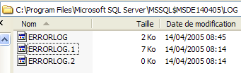 |
在安装目录下的 [LOG] 文件夹中，您可以找到数据库管理系统（DBMS）安装阶段的日志文件。该文件包含一条重要信息：MSDE 实例的名称：
了解此名称非常重要，因为所有 DBMS 客户端都需要它。如果这些日志缺失，您可以通过 [windows_machine\MSDE_instance_name] 格式找到 MSDE 服务器的名称。计算机名称可在多个位置查阅。例如：
- 在桌面上右键单击 [我的电脑]，选择 [属性]，然后转到 [计算机名称] 选项卡：

我们目前仍不清楚如何启动 MSDE 服务器。通常会在 [开始/自动启动] 文件夹中放置一个快捷方式。

如果您查看该快捷方式的属性，会发现其目标路径如下：
在 [C:\Program Files\Microsoft SQL Server] 文件夹中，有以下子文件夹：

- MSSQL$MSDE140405 是我们刚刚安装的 MSDE 实例的文件夹。
- MSSQL 是之前某个 MSDE 实例的文件夹。由于它没有名称，我们称其为默认实例。
- [80] 文件夹是各个已安装 MSDE 实例的共享文件夹。用于启动 MSDE 实例的快捷方式的 [sqlmangr.exe] 目标文件位于 [80\Tools\Binn] 文件夹中。
让我们通过 [开始 -> 程序 -> 启动] 中的快捷方式启动 MSDE。除了任务栏中出现一个图标外，几乎没有任何反应： | 双击此图标：  |
此处显示的 MSDE 服务器是该计算机上的默认服务器 [PORTABLE1_TAHE]。请注意， 我们安装的 MSDE 服务器名为 [PORTABLE1_TAHE\MSDE140405]。我们将 服务器名称：  | 如果一切顺利，[MSDE140405] 实例应已启动：  |
我们可以进行初步检查。在 [sqlmangr.exe] 所在的同一文件夹中，有一个控制台客户端 [osql.exe]，它允许您连接到 MSDE 服务器并执行 SQL 命令。 在安装过程中，我们为 MSDE 服务器的管理员 [sa] 设置了密码 [azerty]。我们将使用该控制台客户端连接到新安装的服务器。如果运行命令 [osql -?]，将显示可用的参数列表：
C:\Program Files\Microsoft SQL Server\80\Tools\Binn>osql -?
utilisation : osql
[-U ID de connexion]
[-P mot de passe]
[-S serveur]
[-H nom de l'host]
[-E connexion approuvée]
[-d utiliser le nom de la base de données]
[-l limite du temps de connexion]
[-t limite du temps de requête]
[-h en-têtes]
[-s séparateur de colonnes]
[-w largeur de colonne]
[-a taille du paquet]
[-e entrée d'echo]
[-I Activer les identificateurs marqués]
[-L liste des serveurs]
[-c fin de cmd] [-D nom ODBC DSN]
[-q "requête cmdline"]
[-Q "requête cmdline" et quitter]
[-n supprimer la numérotation]
[-m niveau d'error]
[-r msgs vers stderr]
[-V severitylevel]
[-i fichier d'entry]
[-o fichier de sortie]
[-p imprimer les statistiques] [-b abandon du lot d'instruction after error]
[-X[1] désactive les commandes [et quitte avec un avertissement]]
[-O utiliser le comportement Old ISQL désactive les éléments suivants]
<EOF> traitement par lot d'instructions
Mise à l'automatic console width scaling
Messages larges
niveau d'default error -1 instead of 1
[-? description de la syntaxe]
按照上述说明启动服务器 [MSDE140405]，然后在命令提示符窗口中，使用 [osql] 通过 [sa, azerty] 身份连接到服务器 [portable1_tahe\msde140405]：
C:\Program Files\Microsoft SQL Server\80\Tools\Binn>OSQL.EXE -U sa -S portable1_tahe\msde140405 -P azerty
1>
提示符 [1>] 表示 [osql] 正在等待命令。 我们已成功连接。要正确使用 [osql]，请查阅 MSDE 文档。该文档提供多种格式（PDF、HTML 帮助等）。此文档内容相当详尽。通常，建议使用图形化客户端来操作 MSDE 数据库。稍后将对此进行说明。要退出 [osql]，请使用 [exit] 命令：
接下来我们将了解如何在新安装的 MSDE 服务器上创建数据库。在此之前，我们将简要介绍一个名为 [MSDE Manager] 的工具，它允许您更改 MSDE 服务器的身份验证模式。实际上，如果您使用默认安装选项安装此类服务器，服务器的身份验证模式将设置为 [Windows 身份验证]。此类身份验证仅允许在 Windows 计算机上已识别的用户（可能通过域）进行访问。 对于希望连接数据库以使用其内容的 VB.NET 程序而言，这种模式并不实用。对于通过 JDBC 驱动程序访问 DBMS 的 Java 应用程序来说，情况则更为棘手。在这种情况下，混合身份验证是更优的选择，因为它除了支持上述身份验证方法外，还接受在 DBMS 中定义的用户名/密码组合。[MSDE Manager] 工具可帮助您执行此操作。
3.13. 在哪里可以找到 MSDE Manager？
[MSDE Manager] 是 MSDE 数据库管理系统（DBMS）的管理工具。您可以在 URL [http://www.valesoftware.com/] 找到它。
通过上述链接下载免费版本：


试用版的使用期限较短。这没关系，因为我们仅将其用于一项特定的任务。下载并安装该产品。桌面将生成一个快捷方式。使用它来启动 MSDE Manager。经过初始窗口后，您将进入以下界面：

- 启动 MSDE140405 服务器
- 您必须以管理员身份登录到 Windows 计算机
- 右键单击 [SQL Server Group] 链接，并选择 [New SQL Server Registration] 选项：


将显示以下属性页面：
 |
portable1_tahe\msde140405 - 您要连接的 MSDE 实例名称 | |
Windows 身份验证 - 此模式始终可用，允许 Windows 计算机管理员连接到 MSDE 服务器 | |
选择列表中唯一的服务器组 [SQL Server Group] |
单击 [确定] 后，将显示 MSDE140405 服务器的属性树：

此时我们可以开始创建数据库。但我们不会这样做，因为我们将使用另一款产品——即我们之前介绍过的 IBExpert 产品的克隆版本。我们只需更改 MSDE 的身份验证模式即可。右键单击上方的 MSDE140405 服务器，然后选择 [设计] 选项：

此时将显示以下信息窗口：

[常规] 选项卡提供了关于您所连接的 MSDE 服务器的信息。[安全] 页面是我们关注的重点：
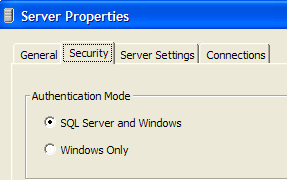
在此处，您必须确保 MSDE 身份验证模式设置为 [SQL Server 和 Windows]。这样您就可以通过两种方式连接到 MSDE：
- 使用 Windows 管理员帐户——即本文中采用的方式
- 使用 MSDE 帐户——此时需要输入用户名和密码。这是在程序连接到 DBMS 数据库时应采用的模式。
确认此选择后退出 MSDE 管理器。我们不再需要它。要创建 MSDE 数据库，我们将使用另一款工具：EMS MS SQL Manager。
3.14. 在哪里可以找到 EMS MS SQL Manager？
EMS MS SQL Manager 是一款用于管理 Microsoft SQL Server 数据库管理系统（DBMS）以及 MSDE 的图形化工具。它与前文提到的 IB-Expert 工具非常相似。该工具可通过以下网址获取：[http://sqlmanager.net/]（2005年4月）：

该网站提供了多种数据库管理系统（DBMS）的管理工具。请点击 [MS SQL Manager] 链接：

上文中，我们选择了该产品的精简版。下载并安装它。您将获得一个类似于下图所示的文件夹：

可执行文件名为 [MsManager.exe]。通常在 [开始] 菜单中会有一个快捷方式：
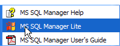
启动后，MS SQL Manager 将显示以下窗口：

首先，让我们使用 [数据库/注册主机] 选项注册我们要使用的 MSDE 服务器：
 |
注释：
- 步骤 1 - 如前所述，MSDE 支持两种身份验证模式：Windows 模式和 SQL Server 模式。在 [Windows] 模式下，使用 Windows 计算机的账户；在 [SQL Server] 模式下，使用数据库管理系统 (DBMS) 的账户。 [SQL Server] 既可在 [Windows] 模式下运行，也可在混合 [Windows、SQL Server] 模式下运行。[Windows] 身份验证模式始终可用。然而，混合身份验证模式并非总是处于活动状态。我们已经了解了如何通过 MSDE 管理器启用它。在上文中，连接是使用管理员账户建立的。
- 步骤 2 - 身份验证成功后，将显示默认的 MSDE 数据库。上图中，所有数据库均已被选中。
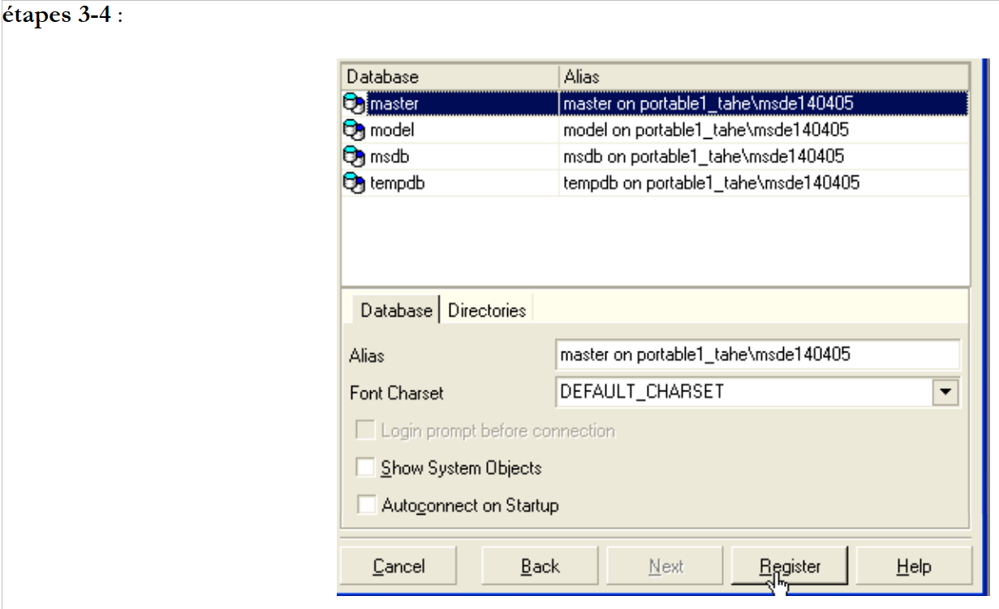 |
注释：
- 步骤 3：可选择所选数据库的管理选项。此处保留了默认选项。
- 步骤 4：我们通过 [注册] 按钮注册 MSDE 服务器
随后，MSDE 服务器将显示在数据库资源管理器中：

现在，让我们使用 [数据库/创建数据库] 选项来创建一个数据库：
 |
步骤 2：
当此信息页面出现时，[dbarticles] 数据库已创建完成。您可以通过点击 [测试连接] 按钮进行验证。在 [数据库别名] 字段中，您可以输入任意名称。此处，我们输入的是：
- 数据库名称
- 该数据库所在的 MSDE 服务器名称
- 将拥有此数据库的用户 [admarticles] 及其密码 [mdparticles]。该用户尚未创建，但即将创建。
步骤 3：
- 单击 [注册] 按钮，在 [MS SQL Server] 中注册新数据库。注册完成后，[admarticles] 数据库将出现在数据库列表中。双击该数据库可显示其属性树。
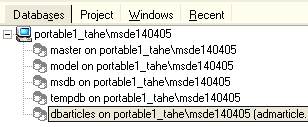 |  |
现在，让我们创建一个新登录名，作为 [admarticles] 数据库的管理员。
- 选择 [工具/登录管理器] 选项：

- 我们可以看到已经定义了两个登录账号：
- [BUILTIN\Administrators]：此登录名使用 Windows 身份验证。它代表 MSDE 服务器所在的 Windows 计算机的管理员
- sa：此登录使用 SQL 身份验证。默认情况下，它是 MSDE 服务器的管理员。请注意，根据 MSDE DBMS 安装时的配置，其密码为 [azerty]。
- 右键单击“登录名”区域，然后添加一个新登录名：
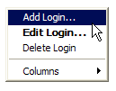 |
- 此时将出现一个表单，用于定义新登录账号的属性：

- 登录名：adarticles
- 密码：mdparticles
- 点击 [确定] 按钮后，MS Manager 将显示即将执行的 SQL 查询：
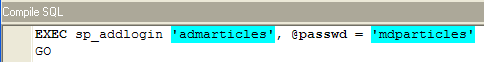
上文所示的 SQL 语言是 Transact-SQL，即 MSDE 所使用的 SQL 语言。点击 [确定] 即可执行此代码
- 新登录名已添加到登录名列表中：
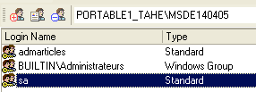
- 在 [dbarticles] 数据库属性窗口中，右键单击 [users] 以创建一个对 [dbarticles] 数据库具有权限的用户：

- 随后将出现以下窗口：

- 在 [登录名] 下拉列表中，您将看到现有登录名的列表。选择 [admarticles] 登录名。
- 在 [名称] 字段中，输入用户名。一个登录名可以关联多个用户。此外，在 MSDE 中，创建用户之前必须先创建登录名。此时 [用户] 面板显示如下：

- 现在让我们转到 [所属组] 面板，该面板将允许我们定义用户的权限：

- 我并非 MSDE 的资深用户，因此不确定左侧窗格中列出的每个角色的确切含义。[db_owner] 角色颇具吸引力（owner = 所有者）。因此，我们将为我们的用户 [admarticles] 选择该角色：

- 点击上方的 [编译] 按钮以确认选择。执行的 SQL 查询如下：
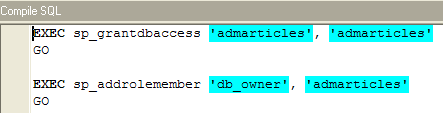
- 点击 [确定] 进行编译。现在，我们已为 [dbarticles] 数据库创建了一个用户：
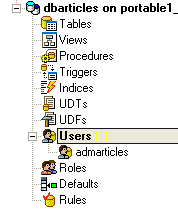
- 现在让我们创建一个表。右键单击 [Tables]，然后选择 [New Table] 选项。这将打开表属性定义窗口：

- 首先，在 [表名] 输入框中将表命名为 [ARTICLES]。接下来，切换到 [字段] 面板：

- 定义以下字段：
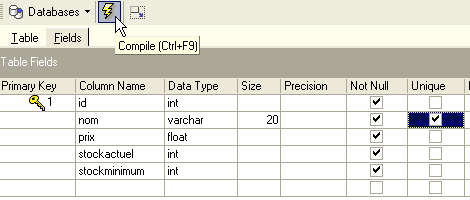
在“编译”定义之前，表不会被创建。请使用上方的 [编译] 按钮来完成表的定义。[MS SQL Manager] 会准备用于生成表的 SQL 查询，并请求确认：

值得注意的是，[MS SQL Manager] 会显示已执行的 SQL 查询。这有助于您学习 Transact-SQL 语言。[提交] 按钮用于确认当前事务，而 [回滚] 则用于取消事务。在此，我们点击 [提交] 接受该操作。完成后，[MS SQL Manager] 会将创建的表添加到数据库树中：
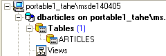
双击该表，即可查看其属性：

通过 [Checks] 面板，我们可以为该表添加新的完整性约束。对于 [ARTICLES] 表，我们将创建以下约束：
- 字段 [ID, PRICE, CURRENTSTOCK, MINIMUMSTOCK] 的值必须 >=0
- [NAME] 字段不能为空
在 [检查] 面板中，右键单击空白区域以添加新约束 [新建检查]：

- 约束编辑表如下所示：

名称：约束的名称
表：约束适用的表
定义：约束表达式
可通过上方的 [编译] 按钮对约束进行编译。
- 再次，[MS SQL Manager] 会显示已执行的 SQL 命令：

- 我们通过 [Commit] 按钮（未显示）对其进行验证。如果返回 [ARTICLES] 表的 [Checks] 面板，会看到新的约束：

- 我们以同样的方式定义其他约束，最终得到以下列表：

完成上述操作后，打开 [ARTICLES] 表的 [DDL] 面板：

该面板显示了包含所有约束条件的创建表的 Transact-SQL 代码。您可以将此代码保存为脚本以便稍后运行：
CREATE TABLE [ARTICLES] (
[id] int NOT NULL,
[nom] varchar(20) COLLATE French_CI_AS NOT NULL,
[prix] float(53) NOT NULL,
[stockactuel] int NOT NULL,
[stockminimum] int NOT NULL,
CONSTRAINT [ARTICLES_uq] UNIQUE ([nom]),
PRIMARY KEY ([id]),
CONSTRAINT [ARTICLES_ck_id] CHECK ([id] > 0),
CONSTRAINT [ARTICLES_ck_nom] CHECK ([nom] <> ''),
CONSTRAINT [ARTICLES_ck_prix] CHECK ([prix] >= 0),
CONSTRAINT [ARTICLES_ck_stockactuel] CHECK ([stockactuel] >= 0),
CONSTRAINT [ARTICLES_ck_stockminimum] CHECK ([stockminimum] >= 0)
)
ON [PRIMARY]
GO
现在是时候向 [ARTICLES] 表中输入一些数据了。为此，请使用其 [数据] 面板：
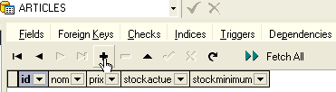
[+] 按钮用于添加一行，[-] 按钮用于删除一行。只需在表格中每行的输入框中输入内容即可完成数据录入。点击下方的 [Post Edit] 按钮即可对该行进行验证：

让我们创建两条记录：

[MS SQL Manager] 允许您通过 [工具/显示 SQL 编辑器] 选项或 [F12] 键运行 SQL 查询。这将打开一个高级 SQL 查询编辑器，供您运行查询。查询会被保存，因此您可以重新访问已运行的查询。以下是一个示例：
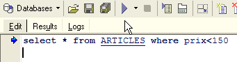
使用上方的 [执行] 按钮执行该 SQL 查询。您将获得以下结果：

我们的演示到此结束。[MS SQL Manager - MSDE] 组合与 [IBExpert - Firebird] 组合一样，也是学习数据库的绝佳工具。
3.15. 创建 ODBC 数据源 [MSDE]
SQL Server 的 ODBC 驱动程序通常默认安装在 Windows 计算机上。
- 启动工具 [开始 -> 设置 -> 配置工具 -> 管理工具 -> ODBC 数据源]：
- 将显示以下窗口：
- 单击 [添加] 以添加一个新的系统数据源（位于 [系统 DSN] 窗格中），我们将将其与上一节中创建的 MSDE 数据库关联：

- 首先，我们需要指定要使用的 ODBC 驱动程序。上图中，我们选择 [SQL Server] 的驱动程序，然后单击 [完成]。随后，[SQL Server] ODBC 驱动程序向导将接管后续操作：

- 我们填写各个字段：
ODBC 源的名称——可以是任意名称 | |
可以是任意名称 | |
包含 ODBC 源数据的 MSDE 服务器的名称 |
- 单击 [下一步] 以提供更多信息：

- 填写各个字段：
指定将使用在 MSDE 服务器上注册的用户名连接到 ODBC 数据源 | |
用户登录名 | |
用户密码 |
- 请注意，这是我们首次使用上一节中创建的用户（admarticles、mdparticles）。再次点击 [下一步] 进入下一屏幕：
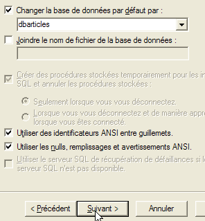
- 我们填写各个字段：
我们将数据库 [dbarticles] 设为用户 [admarticles] 的默认数据库 |
- 点击 [下一步] 进入下一屏幕：

- 我们接受默认值并点击[完成]。系统将显示即将创建的 ODBC 源的特性摘要：

- 通过 [测试数据源] 按钮，我们可以验证信息的有效性。请确认 MSDE 正在运行，然后测试连接：

- 现在我们可以确定 [admarticles, mdparticles] 这对数据已被识别。
如需进一步测试，读者可按照第 3.10 节中所述的步骤进行操作。
3.16. MSDE 数据库的连接字符串
- 启动 Visual Studio 并打开服务器资源管理器 [视图/服务器资源管理器]：
|
- 右键单击 [数据连接]，然后选择 [添加连接] 选项：

- 在 [提供程序] 窗格中，指定要使用 SQL Server 数据源，然后切换到 [连接] 窗格。请注意，此处我们不使用 ODBC 驱动程序。

您要连接的 MSDE 服务器名称 | |
用于连接数据库的用户名 | |
与该用户名关联的密码 | |
您要使用的数据库 |
通过 [测试连接] 按钮，您可以验证信息的有效性：

- 点击 [确定] 确认向导。有趣的是，此时会弹出一个新窗口，要求输入连接详细信息：

- 再次输入这些信息，然后点击 [确定]。随后，该数据源将出现在 Visual Studio 的 [服务器资源管理器] 窗口中：
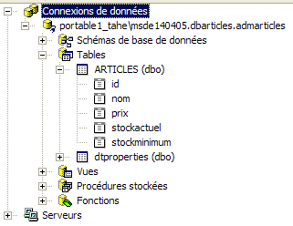
- 双击 [ARTICLES] 表，即可访问该表的数据：

- 如果我们在 [服务器资源管理器] 窗格中右键单击链接 [portable1_tahe\msde140405.dbarticles.admarticles] 并选择 [属性] 选项，即可查看连接属性：

- [ConnectString] 是一个需要了解的重要属性，因为 .NET 代码需要它来建立与数据库的连接。此处的连接字符串为：
Provider=SQLOLEDB.1;Persist Security Info=False;User ID=admarticles;Initial Catalog=dbarticles;Data Source=portable1_tahe\msde140405;Use Procedure for Prepare=1;Auto Translate=True;Packet Size=4096;Workstation ID=PORTABLE1_TAHE;Use Encryption for Data=False;Tag with column collation when possible=False
此连接字符串中的许多元素都有默认值。以下连接字符串即可满足需求：